Electronic Control System
Electronic Control SystemElectronic Control
The electronic control system consists of the powertrain control module (PCM), sensors, and seven solenoid valves. Shifting and lock-up are electronically controlled for comfortable driving under all conditions.
Functional Diagram
The PCM receives input signals from the sensors, switches, and other control units, processes data, and outputs signals for the engine control system and A/T control system. The A/T control system includes shift control, clutch pressure control, and lock-up control. The PCM switches the shift solenoid valves and the A/T clutch pressure control solenoid valves to control shifting transmission gears and lock-up torque converter clutch.
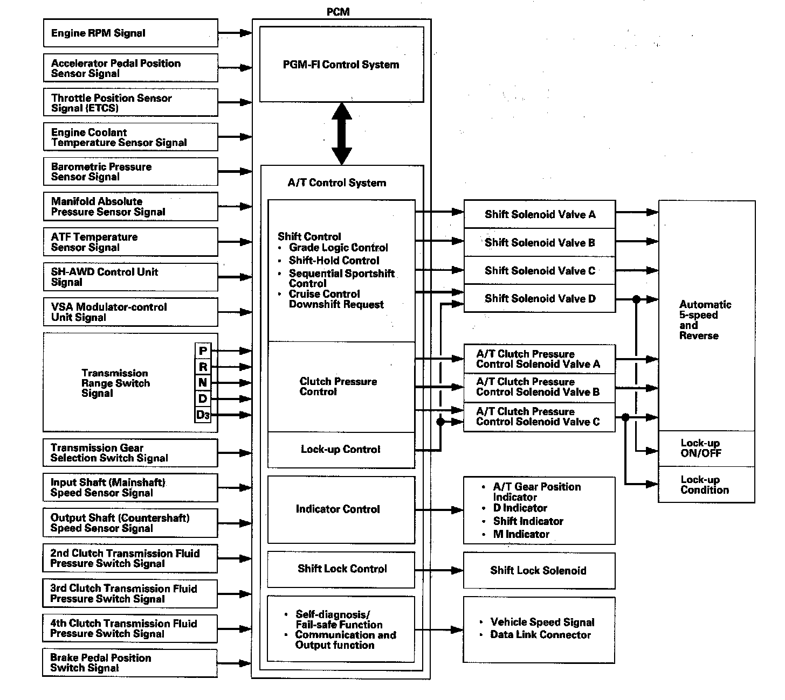
Electronic Control System Component Locations:
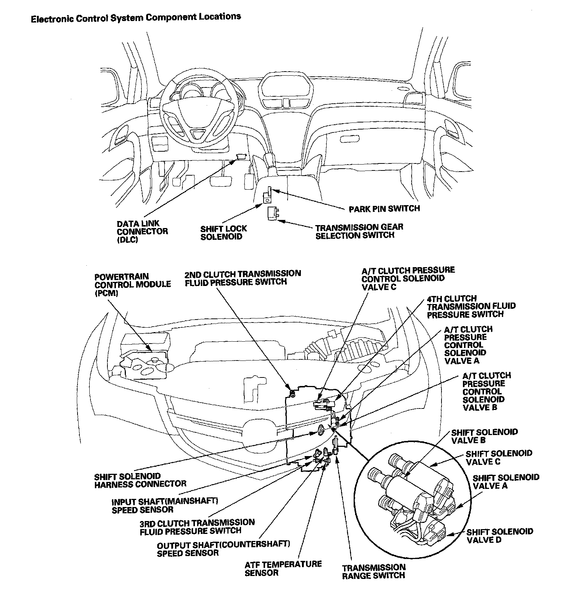
Shift Control
The PCM instantly determines which gear should be selected by various signals sent from sensors and switches, and it actuates the shift solenoid valves A, B, C, and D to control shifting transmission gear.
There are two types of shift solenoid valves:
^ Shift solenoid valves A and D use the ON-OPEN/OFF-CLOSE type; the shift solenoid valve opens the port of shift solenoid valve pressure while the shift solenoid valve is turned ON by the PCM, and closes the port when shift solenoid valve is OFF.
^ Shift solenoid valves B and C use the ON-CLOSE/OFF-OPEN type; the shift solenoid valve closes the port of shift solenoid valve pressure while the shift solenoid valve is turned ON by the PCM, and opens the port when shift solenoid valve is OFF.
The combination of driving signals to shift solenoid valves A, B, C, and D are shown in the table.
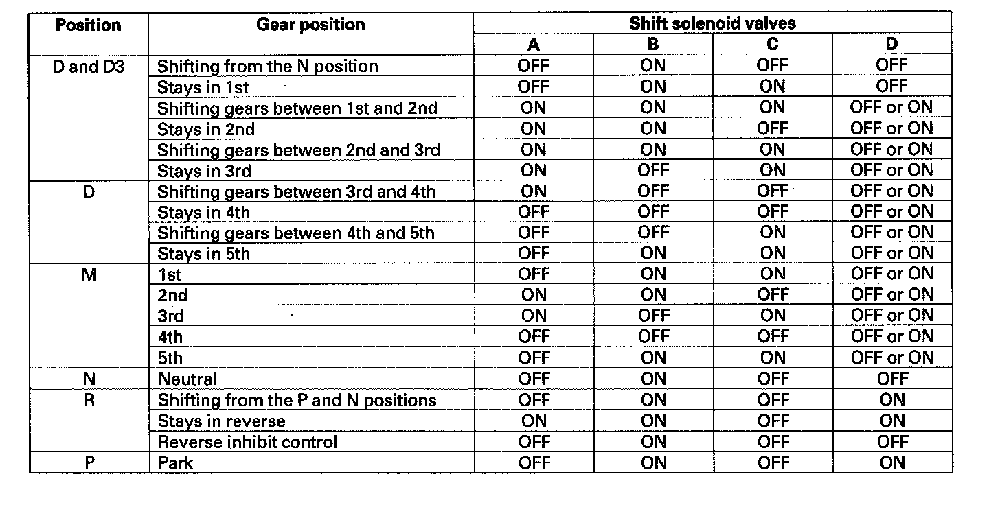
Shift Control - Grade Logic Control
The grade logic control system has been adopted to control shifting in the D and D3 positions. The PCM compares actual driving conditions with memorized driving conditions, based on the input from the throttle position sensor, the engine coolant temperature sensor, the barometric pressure sensor, the brake pedal position switch signal, and the shift lever position signal, to control shifting while the vehicle is ascending or descending a slope.
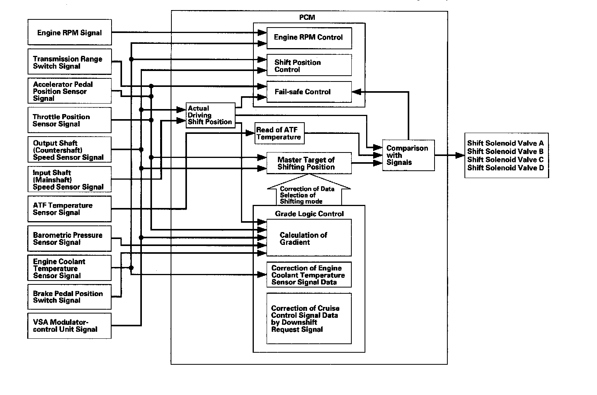
Grade Logic Control: Ascending Control
When the PCM determines that the vehicle is climbing a hill in the D and D3 positions, the system extends the engagement area of 2nd gear, 3rd gear, and 4th gear to prevent the transmission from frequently shifting between 2nd and 3rd gears, between 3rd and 4th gears, and between 4th and 5th gears, so the vehicle can run smooth and have more power when needed.
NOTE: Shift commands stored in the PCM between 2nd and 3rd gears, between 3rd and 4th gears, and between 4th and 5th gears, enable the PCM to automatically select the most suitable gear according to the magnitude of a gradient.
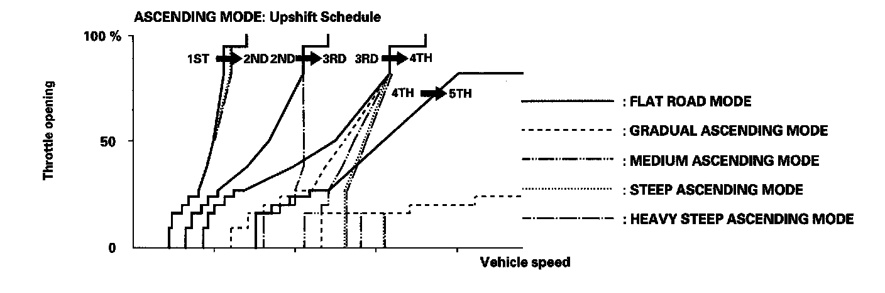
Grade Logic Control: Descending Control
When the PCM determines that the vehicle is going down a hill in the D and D3 positions, the shift-up speed from 4th to 5th gear, 3rd to 4th gear, and from 2nd to 3rd (when the throttle is closed) becomes faster than the set speed for flat road driving to widen the 4th gear, 3rd gear, and 2nd gear driving areas. This, in combination with engine braking from the deceleration lock-up, achieves smooth driving when the vehicle is descending. There are three descending modes with different 4th gear driving areas, 3rd gear driving areas, and 2nd gear driving areas according to the magnitude of a gradient stored in the PCM. When the vehicle is in 5th or 4th gear and you are decelerating while applying the brakes on a steep hill, the transmission will downshift to a lower gear. When you accelerate, the transmission will then return to a higher gear.
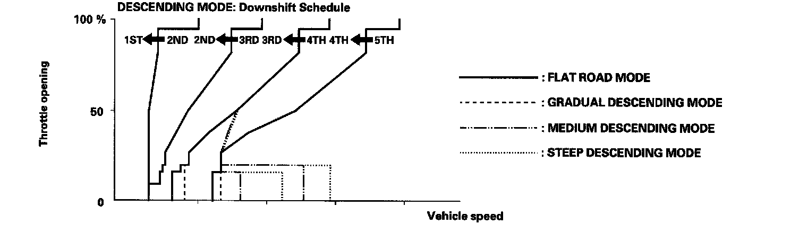
Deceleration Control
When the vehicle goes around a corner and needs to decelerate first and then accelerate, the PCM sets the data for deceleration control to reduce the number of times the transmission shifts. When the vehicle is decelerating from speeds above 25 mph (40 km/h), the PCM shifts the transmission from 4th to 3rd earlier than normal to cope with upcoming acceleration.
Shift-Hold Control
When negotiating winding roads, the throttle is suddenly released and the brakes are applied, as is the case when decelerating at the entrance of a corner, Shift-Hold Control keeps the transmission in its current (lower) ratio as it negotiates the corner and accelerates out.
When the vehicle is driven aggressively on a winding road, the PCM will extend the engagement time of 3rd gear and 4th gear to prevent the transmission from frequently shifting between 3rd, 4th, and 5th gears. This allows the driver to have more control for both acceleration and deceleration.
The PCM monitors the average change in vehicle speed and throttle over time. When these values exceed those for normal driving conditions, the shift-up from 3rd to 4th gear and 4th to 5th gear is delayed. This gives more control over power, and engine braking when the driver is driving aggressively around winding roads. The transmission will resume the normal shift-up pattern after the PCM determines that normal driving has resumed.
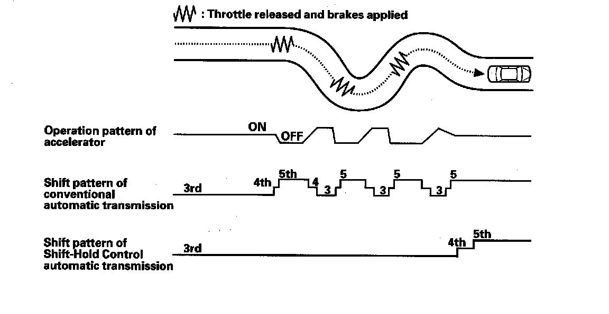
Shift Control - Sequential Sportshift Mode
The MDX transmission is provided a sequential sportshift mode in the D position. In the D position, the transmission has two shifting modes; the automatic shift mode and the sequential sportshift mode. In the automatic shift mode used for general driving, the transmission upshifts and downshifts automatically from 1st through 5th gear. In the automatic shift mode, the shift indicator and the M indicator in the gauge control module do not come on.
The transmission is switched to the sequential sportshift mode by moving the shift lever into the M position from the D, the automatic shift mode is canceled and the sequential sportshift mode comes into operation. The shift indicator displays the number of the selected gear, and the M indicator comes on. In the sequential sportshift mode, the driver can shift up and down manually from 1st through 5th gear by using the shift lever, much like a manual transmission, and the transmission must be shifted up and down by using the shift lever. However, the transmission cannot downshift and stays in the current gear if the shift lever is pulled while the vehicle is coasting at a speed that would cause the engine to over-rev by downshifting the transmission, and the shift indicator blinks the number of the selected gear several times, then returns to the number of the current gear. If the vehicle speed reaches an appropriate speed while the shift indicator is blinking the number of the selected gear, the transmission downshifts and the shift indicator displays the selected gear. The transmission also cannot upshift and stays in the current gear if the shift lever is pushed while driving below an appropriate upshifting speed, the shift indicator blinks the number of the selected gear several times, then returns to the number of the current gear. If the vehicle speed reaches the an appropriate upshift speed while the shift indicator is blinking the number of the selected gear, the transmission upshifts and the shift indicator displays the selected gear.
When the transmission decelerates to a stop, the transmission shifts to 1st gear automatically. The transmission can be shifted to 2nd gear by pushing the shift lever while the vehicle is stopped, and the vehicle can start off in 2nd gear. The sequential sportshift mode is canceled when moving the shift lever to any position other than M.
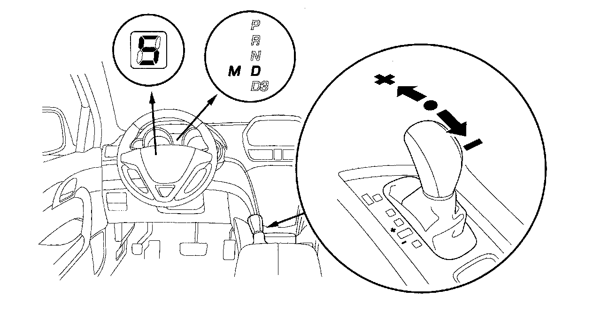
Clutch Pressure Control
The PCM actuates A/T clutch pressure control solenoid valves A, B, and C to control the clutch pressure. When shifting between gears, the clutch pressure regulated by A/T clutch pressure control solenoid valves A, B, and C engages and disengages the clutch smoothly.
The PCM receives input signals from the various sensors and switches, performs processing data, and outputs current to A/T clutch pressure control solenoid valves A, B, and C.
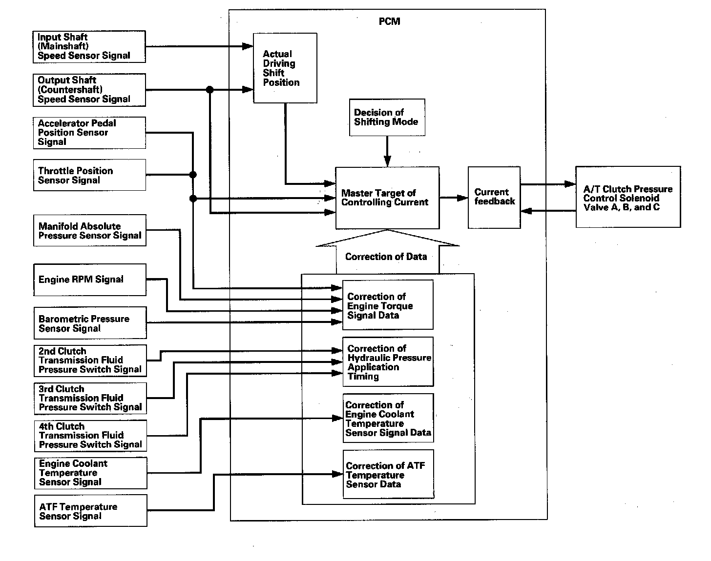
Lock-up Control
The shift solenoid valve D controls the hydraulic pressure to switch the lock-up shift valve and lock-up ON and OFF. The PCM actuates the shift solenoid valve D and the A/T clutch pressure control solenoid valve C ON, the condition of lock-up starts. The A/T clutch pressure control solenoid valve C regulates and applies hydraulic pressure to the lock-up control valve to control the volume of the lock-up.
The lock-up mechanism operates in 2nd, 3rd, 4th, and 5th gears in the D position, and in 2nd and 3rd gears in the D3 position.
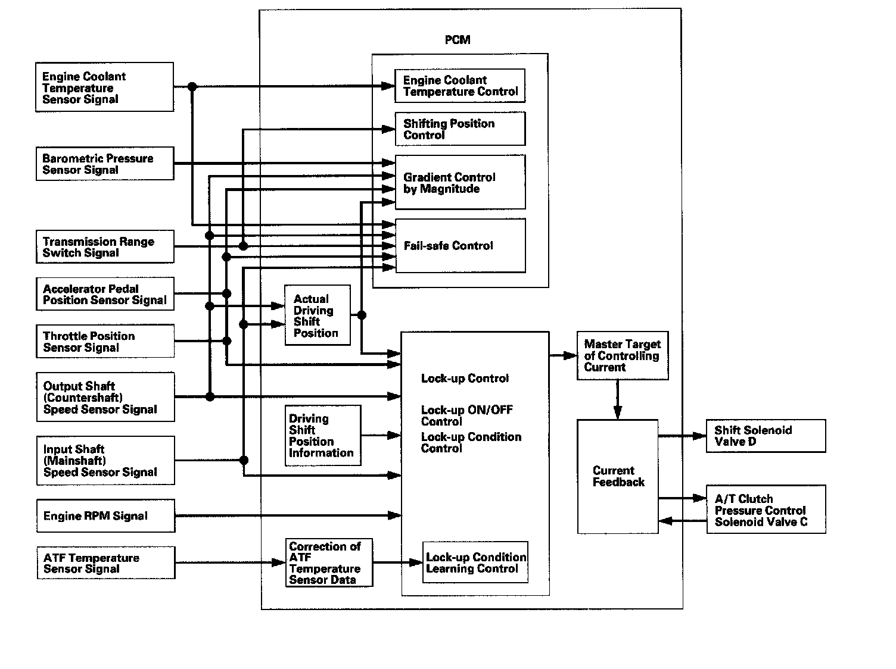
PCM A/T Control System Electrical Connections:
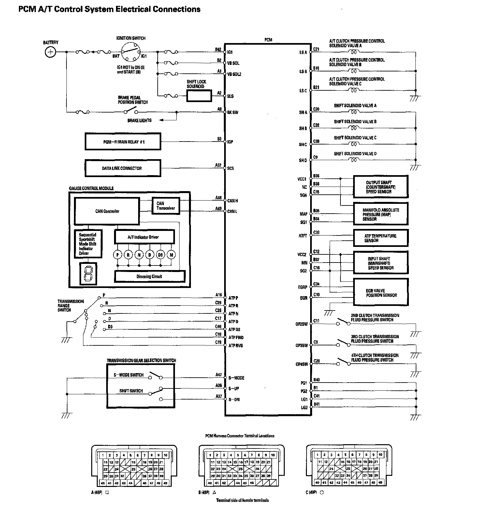
PCM A/T Control System Inputs And Outputs (Part 1):
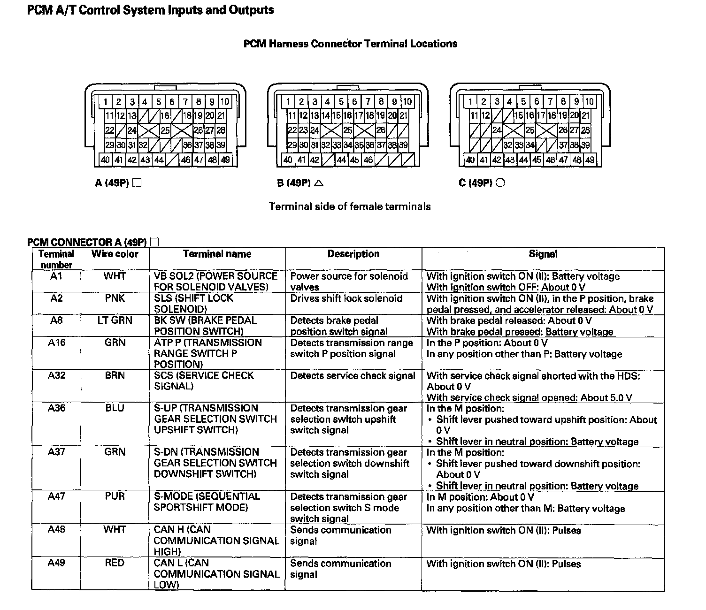
PCM A/T Control System Inputs And Outputs (Part 2):
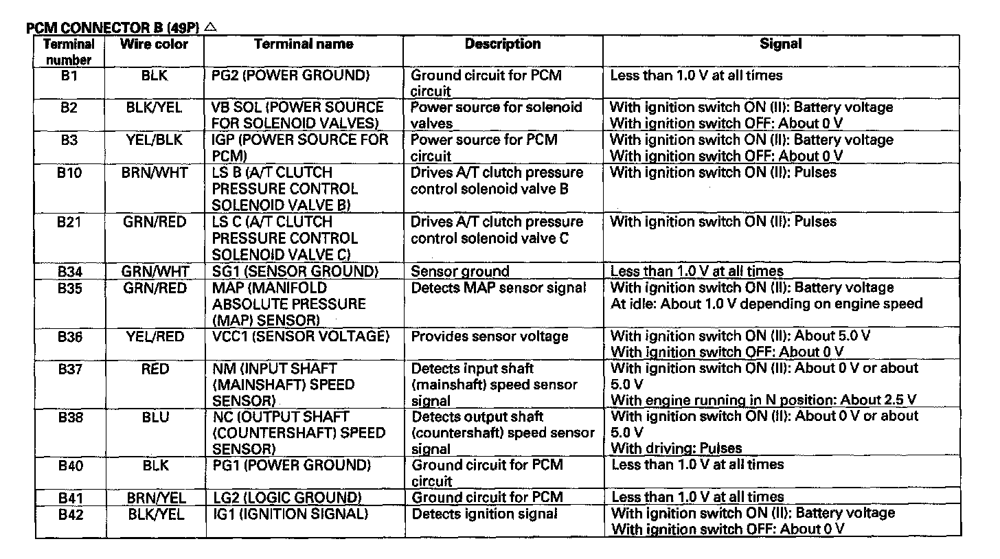
PCM A/T Control System Inputs And Outputs (Part 3):
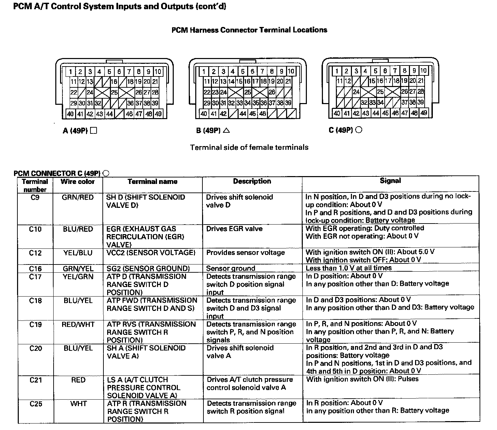
PCM A/T Control System Inputs And Outputs (Part 4):
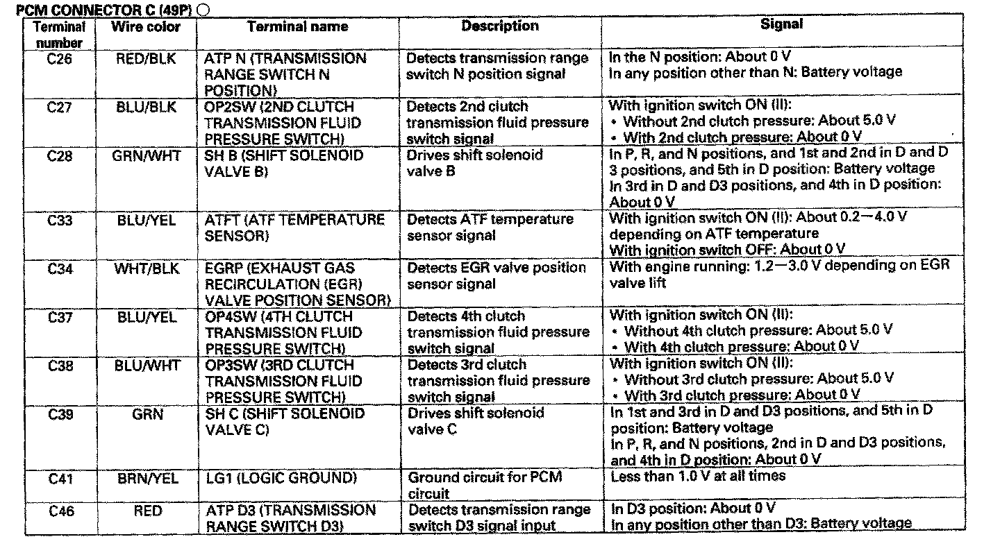